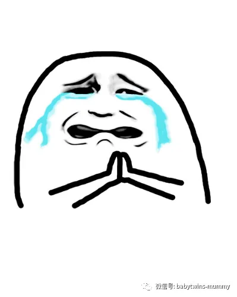

↑来这里找双胞胎妈妈"取西经”
文|圆圈妈 表情图|圆圈妈 图片|来自网络
今天在双胞胎妈妈群看到一位准妈咪的求助，
说她的两个宝宝孕周相差2周。
以我的经验，高度疑似TTTs。
即「双胞胎输血症候群」（twin-twin transfusion syndrome，缩写为TTTS）
可是我不敢妄加评论，免得让这位准妈咪更加担心。
只是好心提醒下她要勤做B超，密切观察。
我想起了三年前怀着圆圈哥俩的时候，
也是四处发帖求助孕期中各种“疑难杂症”！
无奈，我们的双胞胎群体还是不够强大，
知道的人少之甚少。
这也是为什么我要建立“孖仔帮”公众号的原因。
我在网上重新搜罗了些关于TTTs 的信息。
参考文献：https://www.mababy.com
婴儿&母亲。
一个台湾的育儿网站！
有兴趣的孕妈咪可以参考查阅！
以下内容来源于该网站.
什么是双胞胎输血症候群？
顾名思义就是双胞胎之间发生不正常的血液交通，使得供血者变得较轻，羊水减少；受血者变得较重，羊水增加。这种情形只会发生于同性别、单一绒毛膜包裹两个羊膜的双胞胎。但广义来说，同性别的多胞胎只要是单一绒毛膜，包裹多个羊膜，当发生了血管不正常的交通，也会产生多胞胎之间的体重或羊水有显著的差异，因此称作「胎儿胎儿间输血症候群」（feto-fetaltransfusionsyndrome，缩写为FFTS）其实是更恰当的。
有什么症状？
双（多）胞胎之间除了羊水与体重产生明显差异外，供血者容易羊水少、肾脏血流少、胎儿易受压迫甚至发育不良。受血者因血流增加，容易产生心脏衰竭与胎儿水肿。不管是供血者或受血者，都大大增加了死亡率，即使存活，也容易有神经学上的后遗症。
发生机率有多少？
各个研究存在不少的差异，因为怀孕早期的双胞胎输血症候群，常造成其中一个胎儿不发育，只产下一个宝宝。因此，若只针对生产后的双（多）胞胎去做统计，就有低估发生双胞胎输血症候群的的可能。根据最近文献的统计，妇女自然怀孕是双胞胎的机率约1％，双胞胎的胎盘结构是单绒毛膜与双羊膜的机率约有1/5，而这种单绒毛膜与双羊膜的双胞胎发生双胞胎输血症候群的机率约是1/10。由上得知，知道怀了双胞胎后，约有1/50的机率会有双胞胎输血症候群。
如何发现？
虽然双胞胎发生双胞胎输血症候群的机率并不高，但早期诊断与早期治疗仍可以减少双胞胎输血症候群产生的并发症与死亡。早期的诊断标准靠出生时婴儿间的体重差距超过15〜20%，或是彼此的血红素差距超过5gm/dl，但是近来标准已有改变。因为有些双胞胎彼此没有发生血液的交通，也是有体重与血红素差距很大的情况；相反的，有些双胞胎之间有血液的交通，彼此的体重与血红素却没有达到上述明显的差异。因此怀孕期间大的羊水袋的最大深度超过8公分，而小的羊水袋的最大深度不到2公分，是比较可靠的诊断方式。当然，产后仔细检视双胞胎的胎盘，以病理诊断存在血管的交通，才是最严格诊断双胞胎输血症候群的方式。
如何治疗？
◎当怀孕周数小于26周，若发现严重的双胞胎输血症候群时，首选是雷射治疗，中断不正常的交通血管。
◎当怀孕周数小于26周，只发现轻微的双胞胎输血症候群时，可以每周作超音波追踪，看情况再决定是否做抽羊水或雷射等侵入性治疗。
◎当怀孕周数大于26周，才发现双胞胎输血症候群时，抽羊水或间隔打洞让两袋羊水互通是可以考虑的治疗。
◎当双（多）胞胎产下后，除了针对婴儿的生命征象做监控与治疗外，仍要当心后续可能的神经学后遗症。
圆圈妈的经验分享：
孕第8周，第一次做B超，
我就知道我怀的是双胎。
单绒双羊！
这个陌生的专有名词陪伴了我整个孕期！
跟单绒双羊绑定的还有一个更加诡异的专有名词，
双胎输血综合征，简称TTTs!
跟所有双胎妈妈一样，
当得知肚子里面有两个小种子在生根发芽的时候，
我是惊吓多过惊喜!
一向对双胞胎只有羡慕嫉妒恨的我居然也双胎了.
无知的我像个无头苍蝇一样，在网上搜罗各种有关双胞胎的信息。
我得知这个世界上有TTTs的时候，正好是孕12周。
深入了解到TTTs之后，我吓到手脚都在发抖。
不禁摸摸肚子！
天啊！我真的有信心让你们活着出来吗？
尤其是在天涯论坛上看到一个双胞胎宝爸的帖子的时候，
我甚至萌生了减胎的想法！
这个帖子写的是关于他的双胞胎宝宝不幸患有TTTs，
这位双胞胎宝爸为了拯救尚未出世的宝宝，
殚精竭虑，踏遍各大医院，走访全国各地名医。
我在想以我的经济实力，要是真碰上了TTTs，
那就只能顺其自然，听天由命的了！
是的，我就是这样的心态迎接两个小天使的来临！
天知道，我整个孕期是怎么在煎熬中度过的！
只有自己心里最清楚那种苍白无力感了。
每次产检，第一个问题就是，
里面那两个大小重量一样吗？
有一次，粗心的实习医生没有经验，说只听到一个胎心，
我吓到当场大哭。
后来主治医生过来再听了一次，才在靠近耻骨那里找到另一个胎心。
熬到23周，做了四维彩超。
两个娃体重相差不大，羊水也正常。
我有点如释重负的感觉，
因为TTTs最可能发生的时间段是在孕中期，而且发展还分阶段。
现在23周，如果真的TTTs，熬到28周，我就剖腹产，
拼尽毕生金钱精力去呵护这两个小天使！
我把自己想象得很伟大的样子，
随时随地准备壮烈牺牲！
当我把这种可怕的想法告诉圆圈爸的时候，
圆圈爸误以为我是产前忧郁症，
紧急召唤了所有亲戚朋友给我轮番心理辅导。
他那种程序员的脑袋估计很难想象，
为什么当妈的老是幻想着自己的孩子生病。
他根本不知道，是因为当妈的太在乎太爱她的孩子了！
所幸，直到圆圈哥俩生出来，
都没有出现一个大一个小，身高体重都几乎一样。
今天看到群里的那位宝妈各种焦虑，
突然非常感同身受！
仿佛看到了三年前的自己！
其实，孕期真的没必要那么较真的，
相信宝宝的生命力是顽强的！
他们多么幸运从娘胎开始就一起长大，怎么舍得互相残杀呢？
希望这个文章可以帮到有需要的双胞胎妈咪！
*作者简介：圆圈妈，家有孖仔男两枚，立志做一名合格的80后全职妈妈。
个人博客：三个男人（www.sgguy.com）
一个专注双胞胎群体的网站，面向辣妈奶爸，每天分享亲子养育知识。
↓点击下方“阅读原文”查看更多
